Stained Glass Image Filter
Introduction
This article serves to provides a detailed discussion and implementation of a Stained Glass Image Filter. Primary topics explored include: Creating Voronoi Diagrams, Pixel Coordinate distance calculations implementing Euclidean, Manhattan and Chebyshev methods. In addition, this article explores Gradient Based Edge Detection implementing thresholds.
Zurich: Block Size 15, Factor 4, Euclidean
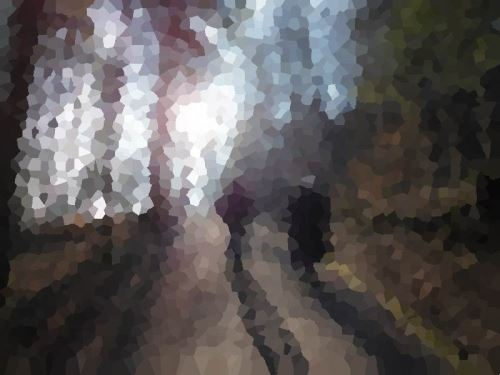
Building the Sample
There are no special requirements or instructions for building the sample source code.
Using the Sample Application
This article’s accompanying sample source code includes a Windows Forms based sample application. The sample application provides an implementation of the concepts explored by this article. Concepts discussed can be easily replicated and tested by using the sample application.
Source/input image files can be specified from the local file system when clicking the Load Image button. Additionally users also have the option to save resulting filtered images by clicking the Save Image button.
The sample application through its user interface allows a user to specify several filter configuration options. Two main categories of configuration options have been defined as Block Properties and Edge Properties.
Block Properties relate to the process of rendering Voronoi Diagrams. The following configuration options have been implemented:
- Block Size – During the process of rendering a Voronoi Diagram regions or blocks of equal shape and size have to be defined. These uniform regions/blocks form the basis of rendering uniquely shaped regions later on. The Block Size option determines the width and height of an individual region/block. Larger values result in larger non-uniform regions being rendered. Smaller values in return result in smaller non-uniform regions being rendered.
- Distance Factor – The Distance Factor option determines the extent to which a pixel’s containing region will be calculated. Possible values range from 1 to 4 inclusive. A Distance Factor value of 4 equates to precise calculation of a pixel’s containing region, whereas a value of 1 results in containing regions often registering pixels that should be part of a neighbouring region. Values closer to 4 result in more varied region shapes. Values closer to 1 result in regions being rendered having more of a uniform shape/pattern.
- Distance Formula – The distance between a pixel’s coordinates and a region’s outline determines whether that pixel should be considered part of a region. The sample application implements three different methods of calculating pixel distance: Euclidean, Manhattan and Chebyshev methods. Each result in region shapes being rendered differently.
Salzburg: Block Size 20, Factor 1, Chebyshev, Edge Threshold 2
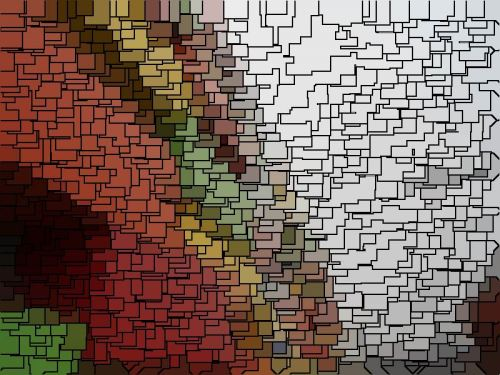
Edge Properties relate to the implementation of Image Gradient Based Edge Detection. Edge detection is an optional filter and can be enabled/disabled through the user interface, The implementation of edge detection serves to highlight/outline regions rendered as part of a Voronoi Diagram. The configuration options implemented are:
- Highlight Edges – Boolean value indicating whether or not edge detection should be applied
- Threshold – In calculating image edges a threshold value determines if a pixel forms part of an edge. Higher threshold values result in less image edges being expressed. Lower threshold values result in more image edges being expressed.
- Colour – If a pixel has been determined as forming part of an image edge, the resulting pixel colour will be determined by the colour value specified by the user.
The following image is a screenshot of the Stained Glass Image Filter sample application in action:
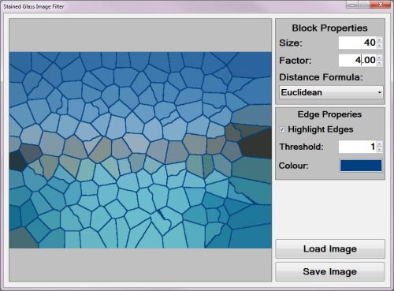
Locarno: Block Size 10, Factor 4, Euclidean
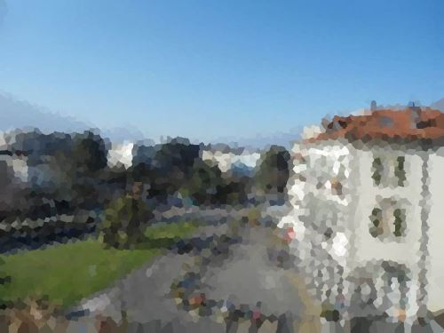
Stained Glass Image Filter
The Stained Glass Image Filter detailed in this article operates on the basis of implementing modifications upon a specified sample/input image, producing resulting images which resemble the appearance of stained glass artwork.
A common variant of stained glass artwork comes in the form of several individual pieces of coloured glass being combined in order to create an image. The sample source code employs a similar method of combining what appears to be non-uniform puzzle pieces. The following list provides a broad overview of the steps involved in applying a Stained Glass Image Filter:
- Render a Voronoi Diagram – Through rendering a Voronoi Diagram the resulting image will be divided into a number of regions. Each region being intended to represent an individual glass puzzle piece. The following section of this article provides a detailed discussion on rendering Voronoi Diagrams.
- Assign each Pixel to a Voronoi Diagram Region – Each pixel forming part of the source/input image should be iterated. Whilst iterating pixels determine the region to which a pixel should be associated. A pixel should be associated to the region whose border has been determined the nearest to the pixel. In a following section of this article a detailed discussion regarding Pixel Coordinate Distance Calculations can be found.
- Determine each Region’s Colour Mean – Each region will only express a single colour value. A region’s colour equates to the average colour as expressed by all the pixels forming part of a region. Once the average colour value of a region has been determined every pixel forming part of that region should be set to the average colour.
- Implement Edge Detection – If the user configuration option indicates that edge detection should be implemented, apply Gradient Based Edge Detection. This method of edge detection has been discussed in detailed in a following section of this article.
Bad Ragaz: Block Size 10, Factor 1, Manhattan
Voronoi Diagrams
Voronoi Diagrams represent a fairly uncomplicated concept. In contrast, the implementation of Voronoi Diagrams prove somewhat more of a challenge. From Wikipedia we gain the following definition:
In mathematics, a Voronoi diagram is a way of dividing space into a number of regions. A set of points (called seeds, sites, or generators) is specified beforehand and for each seed there will be a corresponding region consisting of all points closer to that seed than to any other. The regions are called Voronoi cells. It is dual to the Delaunay triangulation.
In this article Voronoi Diagrams are generated resulting in regions expressing random shapes. Although region shapes are randomly generated, the parameters or ranges within which random values are selected are fixed/constant. The steps required in generating a Voronoi Diagram can be detailed as follows:
- Define fixed size square regions – By making use of the user specified Block/Region Size value, group pixels together into square regions.
- Determine a Seed Value for Random number generation – Determine the sum total of pixel colour components of all the pixels forming part of a square region. The colour sum total value should be used as a seed value when generating random numbers in the next step.
- Determine a Random XY coordinate within each square region – Generate two random numbers, specifying each region’s coordinate boundaries as minimum and maximum boundaries in generating random numbers. Keep record of every new randomly generated XY-Coordinate value.
- Associate Pixels and Regions – A pixel should be associated to the Random Coordinate point nearest to that pixel. Determine the Random Coordinate nearest to each pixel in the source/input image. The method implemented in calculating coordinate distance depends on the configuration value specified by the user.
- Set Region Colours – Each pixel forming part of the same region should be set to the same colour. The colour assigned to a region’s pixels will be determined by the average colour value of the region’s pixels.
The following image illustrates an example Voronoi Diagram consisting of 10 regions:

Port Edward: Block Size 10, Factor 1, Chebyshev, Edge Threshold 2

Calculating Pixel Coordinate Distances
The sample source code provides three different coordinate distance calculation methods. The supported methods are: Euclidean, Manhattan and Chebyshev. A pixel’s nearest randomly generated coordinate depends on the distance between that pixel and the random coordinate. Each method of calculating distance in most instances would be likely to produce different output values, which in turn influences the region to which a pixel will be associated.
The most common method of distance calculation, Euclidean distance, has been described by Wikipedia as follows:
In mathematics, the Euclidean distance or Euclidean metric is the "ordinary" distance between two points that one would measure with a ruler, and is given by the Pythagorean formula. By using this formula as distance, Euclidean space (or even any inner product space) becomes a metric space. The associated norm is called the Euclidean norm. Older literature refers to the metric as Pythagorean metric.
When calculating Euclidean distance the algorithm implemented can be expressed as follows:
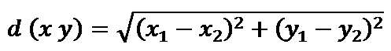
Zurich: Block Size 10, Factor 1, Euclidean
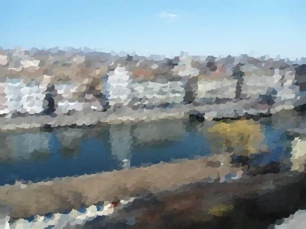
As an alternative to calculating Euclidean distance, the sample source code also implements Manhattan Distance calculation. Often Manhattan Distance calculation will be referred to as City Block, Taxicab Geometry or rectilinear distance. From Wikipedia we gain the following description:
Taxicab geometry, considered by Hermann Minkowski in the 19th century, is a form of geometry in which the usual distance function or metric of Euclidean geometry is replaced by a new metric in which the distance between two points is the sum of the absolute differences of their coordinates. The taxicab metric is also known as rectilinear distance, L1 distance or 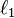 norm (see Lp space), city block distance, Manhattan distance, or Manhattan length, with corresponding variations in the name of the geometry.[1] The latter names allude to the grid layout of most streets on the island of Manhattan, which causes the shortest path a car could take between two intersections in the borough to have length equal to the intersections’ distance in taxicab geometry
When calculating Manhattan Distance the algorithm implemented can be expressed as follows:
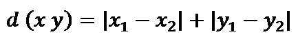
Port Edward: Block Size 10, Factor 4, Euclidean
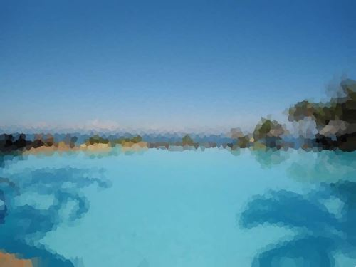
Chebyshev Distance, a distance algorithm resembling the way in which a King Chess piece may move on a chess board. The following description we gain from Wikipedia:
In mathematics, Chebyshev distance (or Tchebychev distance), Maximum metric, or L∞ metric[1] is a metric defined on a vector space where the distance between two vectors is the greatest of their differences along any coordinate dimension.[2] It is named after Pafnuty Chebyshev.
It is also known as chessboard distance, since in the game of chess the minimum number of moves needed by a king to go from one square on a chessboard to another equals the Chebyshev distance between the centers of the squares, if the squares have side length one, as represented in 2-D spatial coordinates with axes aligned to the edges of the board.[3] For example, the Chebyshev distance between f6 and e2 equals 4.
When calculating Chebyshev Distance the algorithm implemented can be expressed as follows:
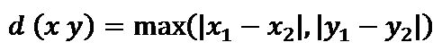
Salzburg: Block Size 20, Factor 1, Chebyshev
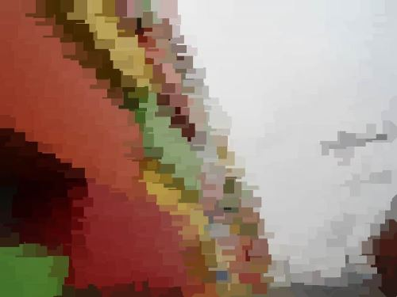
Gradient Based Edge Detection
Various methods of image edge detection can easily be implemented in C#. Each method of edge detection provides a set of benefits, usually weighed against a set of trade-offs. In this article and the accompanying sample source code the Gradient Based Edge Detection method has been implement.
Take into regard that every region within the rendered Voronoi Diagram will only express a single colour, although most regions differ in the single colour they express. Once all pixels have been associated to a region and all pixel colour values have been updated the resulting image defines mostly clearly distinguishable colour gradients. A Gradient Based method of edge detection performs efficiently at detecting image edges. The edges detected are defined between different regions.
An image gradient can be considered as a difference in colour intensity relating to a specific direction. Only once all tasks related to applying the Stained Glass Filter have been completed should the Gradient Based Edge Detection be applied. The steps involved in applying Gradient Based Edge Detection can be described as follows:
- Iterate each pixel – Each pixel forming part of a source/input image should be iterated.
- Determine Horizontal and Vertical Gradients – Calculate the colour value difference between the currently iterated pixel’s left and right neighbour pixel as well as the top and bottom neighbour pixel. If the gradient exceeds the specified threshold continue to step 8.
- Determine Horizontal Gradient – Calculate the colour value difference between the currently iterated pixel’s left and right neighbour pixel. If the gradient exceeds the specified threshold continue to step 8.
- Determine Vertical Gradient – Calculate the colour value difference between the currently iterated pixel’s top and bottom neighbour pixel. If the gradient exceeds the specified threshold continue to step 8.
- Determine Diagonal Gradients – Calculate the colour value difference between the currently iterated pixel’s North-Western and South-Eastern neighbour pixel as well as the North-Eastern and South-Western neighbour pixel. If the gradient exceeds the specified threshold continue to step 8.
- Determine NW-SE Gradient – Calculate the colour value difference between the currently iterated pixel’s North-Western and South-Eastern neighbour pixel. If the gradient exceeds the specified threshold continue to step 8.
- Determine NE-SW Gradient – Calculate the colour value difference between the currently iterated pixel’s North-Eastern and South-Western neighbour pixel.
- Determine and set result pixel value – If any of the six gradients calculated exceeded the specified threshold value set the related pixel in the resulting image to the Edge Colour specified by the user, if not, set the related pixel equal to the source pixel colour value.
Zurich: Block Size 10, Factor 4, Chebyshev
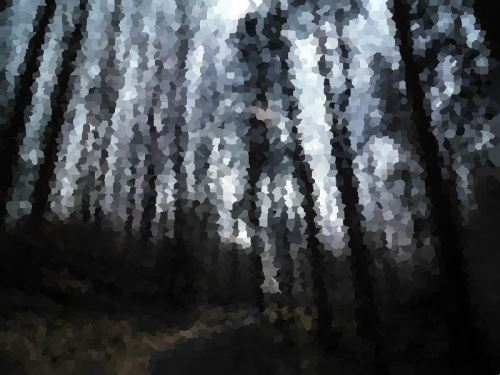
Implementing a Stained Glass Image Filter
The sample source code defines two helper classes, both implemented when applying the Stained Glass Image Filter. The Pixel class represents a single pixel in terms of an XY-Coordinate and Red, Green and Blue values. The definition as follows:
public class Pixel
{
private int xOffset = 0;
public int XOffset
{
get { return xOffset; } set { xOffset = value; }
}
private int yOffset = 0;
public int YOffset
{
get { return yOffset; } set { yOffset = value; }
}
private byte blue = 0;
public byte Blue
{
get { return blue; } set { blue = value; }
}
private byte green = 0;
public byte Green
{
get { return green; } set { green = value; }
}
private byte red = 0;
public byte Red
{
get { return red; } set { red = value; }
}
}
public class Pixel { private int xOffset = 0; public int XOffset { get { return xOffset; } set { xOffset = value; } } private int yOffset = 0; public int YOffset { get { return yOffset; } set { yOffset = value; } } private byte blue = 0; public byte Blue { get { return blue; } set { blue = value; } } private byte green = 0; public byte Green { get { return green; } set { green = value; } } private byte red = 0; public byte Red { get { return red; } set { red = value; } } }
Zurich: Block Size 10, Factor 1, Chebyshev, Edge Threshold 1
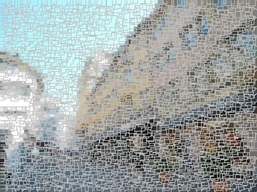
The VoronoiPoint class serves as method of recording randomly generated coordinates and referencing a region’s associated pixels. The definition as follows:
public class VoronoiPoint
{
private int xOffset = 0;
public int XOffset
{
get { return xOffset; } set { xOffset = value; }
}
private int yOffset = 0;
public int YOffset
{
get { return yOffset; } set { yOffset = value; }
}
private int blueTotal = 0;
public int BlueTotal
{
get { return blueTotal; } set { blueTotal = value; }
}
private int greenTotal = 0;
public int GreenTotal
{
get {return greenTotal; } set { greenTotal = value; }
}
private int redTotal = 0;
public int RedTotal
{
get { return redTotal; } set { redTotal = value; }
}
public void CalculateAverages()
{
if (pixelCollection.Count > 0)
{
blueAverage = blueTotal / pixelCollection.Count;
greenAverage = greenTotal / pixelCollection.Count;
redAverage = redTotal / pixelCollection.Count;
}
}
private int blueAverage = 0;
public int BlueAverage
{
get { return blueAverage; }
}
private int greenAverage = 0;
public int GreenAverage
{
get { return greenAverage; }
}
private int redAverage = 0;
public int RedAverage
{
get { return redAverage; }
}
private List<Pixel> pixelCollection = new List<Pixel>();
public List<Pixel> PixelCollection
{
get { return pixelCollection; }
}
public void AddPixel(Pixel pixel)
{
blueTotal += pixel.Blue;
greenTotal += pixel.Green;
redTotal += pixel.Red;
pixelCollection.Add(pixel);
}
}
public class VoronoiPoint { private int xOffset = 0; public int XOffset { get { return xOffset; } set { xOffset = value; } } private int yOffset = 0; public int YOffset { get { return yOffset; } set { yOffset = value; } } private int blueTotal = 0; public int BlueTotal { get { return blueTotal; } set { blueTotal = value; } } private int greenTotal = 0; public int GreenTotal { get {return greenTotal; } set { greenTotal = value; } } private int redTotal = 0; public int RedTotal { get { return redTotal; } set { redTotal = value; } } public void CalculateAverages() { if (pixelCollection.Count > 0) { blueAverage = blueTotal / pixelCollection.Count; greenAverage = greenTotal / pixelCollection.Count; redAverage = redTotal / pixelCollection.Count; } } private int blueAverage = 0; public int BlueAverage { get { return blueAverage; } } private int greenAverage = 0; public int GreenAverage { get { return greenAverage; } } private int redAverage = 0; public int RedAverage { get { return redAverage; } } private List<Pixel> pixelCollection = new List<Pixel>(); public List<Pixel> PixelCollection { get { return pixelCollection; } } public void AddPixel(Pixel pixel) { blueTotal += pixel.Blue; greenTotal += pixel.Green; redTotal += pixel.Red; pixelCollection.Add(pixel); } }
Zurich: Block Size 20, Factor 1, Euclidean, Edge Threshold 1
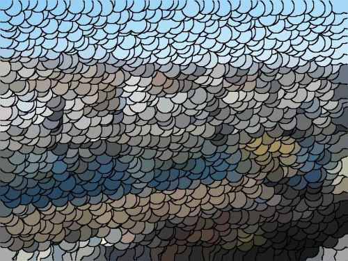
From the perspective of a filter implementation code base the only requirement comes in the form of having to invoke the StainedGlassColorFilter extension method, no additional work is required from external code consumers. The StainedGlassColorFilter method has been defined as an extension method targeting the Bitmap class. The StainedGlassColorFilter method definition as follows:
public static Bitmap StainedGlassColorFilter(this Bitmap sourceBitmap,
int blockSize, double blockFactor,
DistanceFormulaType distanceType,
bool highlightEdges,
byte edgeThreshold, Color edgeColor)
{
BitmapData sourceData =
sourceBitmap.LockBits(new Rectangle(0, 0,
sourceBitmap.Width, sourceBitmap.Height),
ImageLockMode.ReadOnly,
PixelFormat.Format32bppArgb);
byte[] pixelBuffer = new byte[sourceData.Stride *
sourceData.Height];
byte[] resultBuffer = new byte[sourceData.Stride *
sourceData.Height];
Marshal.Copy(sourceData.Scan0, pixelBuffer, 0,
pixelBuffer.Length);
sourceBitmap.UnlockBits(sourceData);
int neighbourHoodTotal = 0;
int sourceOffset = 0;
int resultOffset = 0;
int currentPixelDistance = 0;
int nearestPixelDistance = 0;
int nearesttPointIndex = 0;
Random randomizer = new Random();
List<VoronoiPoint> randomPointList = new List<VoronoiPoint>();
for (int row = 0; row < sourceBitmap.Height - blockSize; row += blockSize)
{
for (int col = 0; col < sourceBitmap.Width - blockSize; col += blockSize)
{
sourceOffset = row * sourceData.Stride + col * 4;
neighbourHoodTotal = 0;
for (int y = 0; y < blockSize; y++)
{
for (int x = 0; x < blockSize; x++)
{
resultOffset = sourceOffset + y * sourceData.Stride + x * 4;
neighbourHoodTotal += pixelBuffer[resultOffset];
neighbourHoodTotal += pixelBuffer[resultOffset + 1];
neighbourHoodTotal += pixelBuffer[resultOffset + 2];
}
}
randomizer = new Random(neighbourHoodTotal);
VoronoiPoint randomPoint = new VoronoiPoint();
randomPoint.XOffset = randomizer.Next(0, blockSize) + col;
randomPoint.YOffset = randomizer.Next(0, blockSize) + row;
randomPointList.Add(randomPoint);
}
}
int rowOffset = 0;
int colOffset = 0;
for (int bufferOffset = 0; bufferOffset < pixelBuffer.Length - 4; bufferOffset += 4)
{
rowOffset = bufferOffset / sourceData.Stride;
colOffset = (bufferOffset % sourceData.Stride) / 4;
currentPixelDistance = 0;
nearestPixelDistance = blockSize * 4;
nearesttPointIndex = 0;
List<VoronoiPoint> pointSubset = new List<VoronoiPoint>();
pointSubset.AddRange(from t in randomPointList
where
rowOffset >= t.YOffset - blockSize * 2 &&
rowOffset <= t.YOffset + blockSize * 2
select t);
for (int k = 0; k < pointSubset.Count; k++)
{
if (distanceType == DistanceFormulaType.Euclidean)
{
currentPixelDistance =
CalculateDistanceEuclidean(pointSubset[k].XOffset,
colOffset, pointSubset[k].YOffset, rowOffset);
}
else if (distanceType == DistanceFormulaType.Manhattan)
{
currentPixelDistance =
CalculateDistanceManhattan(pointSubset[k].XOffset,
colOffset, pointSubset[k].YOffset, rowOffset);
}
else if (distanceType == DistanceFormulaType.Chebyshev)
{
currentPixelDistance =
CalculateDistanceChebyshev(pointSubset[k].XOffset,
colOffset, pointSubset[k].YOffset, rowOffset);
}
if (currentPixelDistance <= nearestPixelDistance)
{
nearestPixelDistance = currentPixelDistance;
nearesttPointIndex = k;
if (nearestPixelDistance <= blockSize / blockFactor)
{
break;
}
}
}
Pixel tmpPixel = new Pixel ();
tmpPixel.XOffset = colOffset;
tmpPixel.YOffset = rowOffset;
tmpPixel.Blue = pixelBuffer[bufferOffset];
tmpPixel.Green = pixelBuffer[bufferOffset + 1];
tmpPixel.Red = pixelBuffer[bufferOffset + 2];
pointSubset[nearesttPointIndex].AddPixel(tmpPixel);
}
for (int k = 0; k < randomPointList.Count; k++)
{
randomPointList[k].CalculateAverages();
for (int i = 0; i < randomPointList[k].PixelCollection.Count; i++)
{
resultOffset = randomPointList[k].PixelCollection[i].YOffset *
sourceData.Stride +
randomPointList[k].PixelCollection[i].XOffset * 4;
resultBuffer[resultOffset] = (byte)randomPointList[k].BlueAverage;
resultBuffer[resultOffset + 1] = (byte)randomPointList[k].GreenAverage;
resultBuffer[resultOffset + 2] = (byte)randomPointList[k].RedAverage;
resultBuffer[resultOffset + 3] = 255;
}
}
Bitmap resultBitmap = new Bitmap(sourceBitmap.Width,
sourceBitmap.Height);
BitmapData resultData =
resultBitmap.LockBits(new Rectangle (0, 0,
resultBitmap.Width, resultBitmap.Height),
ImageLockMode.WriteOnly,
PixelFormat.Format32bppArgb);
Marshal.Copy(resultBuffer, 0, resultData.Scan0,
resultBuffer.Length);
resultBitmap.UnlockBits(resultData);
if (highlightEdges == true )
{
resultBitmap =
resultBitmap.GradientBasedEdgeDetectionFilter(edgeColor, edgeThreshold);
}
return resultBitmap;
}
public static Bitmap StainedGlassColorFilter(this Bitmap sourceBitmap, int blockSize, double blockFactor, DistanceFormulaType distanceType, bool highlightEdges, byte edgeThreshold, Color edgeColor) { BitmapData sourceData = sourceBitmap.LockBits(new Rectangle(0, 0, sourceBitmap.Width, sourceBitmap.Height), ImageLockMode.ReadOnly, PixelFormat.Format32bppArgb); byte[] pixelBuffer = new byte[sourceData.Stride * sourceData.Height]; byte[] resultBuffer = new byte[sourceData.Stride * sourceData.Height]; Marshal.Copy(sourceData.Scan0, pixelBuffer, 0, pixelBuffer.Length); sourceBitmap.UnlockBits(sourceData); int neighbourHoodTotal = 0; int sourceOffset = 0; int resultOffset = 0; int currentPixelDistance = 0; int nearestPixelDistance = 0; int nearesttPointIndex = 0; Random randomizer = new Random(); List<VoronoiPoint> randomPointList = new List<VoronoiPoint>(); for (int row = 0; row < sourceBitmap.Height - blockSize; row += blockSize) { for (int col = 0; col < sourceBitmap.Width - blockSize; col += blockSize) { sourceOffset = row * sourceData.Stride + col * 4; neighbourHoodTotal = 0; for (int y = 0; y < blockSize; y++) { for (int x = 0; x < blockSize; x++) { resultOffset = sourceOffset + y * sourceData.Stride + x * 4; neighbourHoodTotal += pixelBuffer[resultOffset]; neighbourHoodTotal += pixelBuffer[resultOffset + 1]; neighbourHoodTotal += pixelBuffer[resultOffset + 2]; } } randomizer = new Random(neighbourHoodTotal); VoronoiPoint randomPoint = new VoronoiPoint(); randomPoint.XOffset = randomizer.Next(0, blockSize) + col; randomPoint.YOffset = randomizer.Next(0, blockSize) + row; randomPointList.Add(randomPoint); } } int rowOffset = 0; int colOffset = 0; for (int bufferOffset = 0; bufferOffset < pixelBuffer.Length - 4; bufferOffset += 4) { rowOffset = bufferOffset / sourceData.Stride; colOffset = (bufferOffset % sourceData.Stride) / 4; currentPixelDistance = 0; nearestPixelDistance = blockSize * 4; nearesttPointIndex = 0; List<VoronoiPoint> pointSubset = new List<VoronoiPoint>(); pointSubset.AddRange(from t in randomPointList where rowOffset >= t.YOffset - blockSize * 2 && rowOffset <= t.YOffset + blockSize * 2 select t); for (int k = 0; k < pointSubset.Count; k++) { if (distanceType == DistanceFormulaType.Euclidean) { currentPixelDistance = CalculateDistanceEuclidean(pointSubset[k].XOffset, colOffset, pointSubset[k].YOffset, rowOffset); } else if (distanceType == DistanceFormulaType.Manhattan) { currentPixelDistance = CalculateDistanceManhattan(pointSubset[k].XOffset, colOffset, pointSubset[k].YOffset, rowOffset); } else if (distanceType == DistanceFormulaType.Chebyshev) { currentPixelDistance = CalculateDistanceChebyshev(pointSubset[k].XOffset, colOffset, pointSubset[k].YOffset, rowOffset); } if (currentPixelDistance <= nearestPixelDistance) { nearestPixelDistance = currentPixelDistance; nearesttPointIndex = k; if (nearestPixelDistance <= blockSize / blockFactor) { break; } } } Pixel tmpPixel = new Pixel (); tmpPixel.XOffset = colOffset; tmpPixel.YOffset = rowOffset; tmpPixel.Blue = pixelBuffer[bufferOffset]; tmpPixel.Green = pixelBuffer[bufferOffset + 1]; tmpPixel.Red = pixelBuffer[bufferOffset + 2]; pointSubset[nearesttPointIndex].AddPixel(tmpPixel); } for (int k = 0; k < randomPointList.Count; k++) { randomPointList[k].CalculateAverages(); for (int i = 0; i < randomPointList[k].PixelCollection.Count; i++) { resultOffset = randomPointList[k].PixelCollection[i].YOffset * sourceData.Stride + randomPointList[k].PixelCollection[i].XOffset * 4; resultBuffer[resultOffset] = (byte)randomPointList[k].BlueAverage; resultBuffer[resultOffset + 1] = (byte)randomPointList[k].GreenAverage; resultBuffer[resultOffset + 2] = (byte)randomPointList[k].RedAverage; resultBuffer[resultOffset + 3] = 255; } } Bitmap resultBitmap = new Bitmap(sourceBitmap.Width, sourceBitmap.Height); BitmapData resultData = resultBitmap.LockBits(new Rectangle (0, 0, resultBitmap.Width, resultBitmap.Height), ImageLockMode.WriteOnly, PixelFormat.Format32bppArgb); Marshal.Copy(resultBuffer, 0, resultData.Scan0, resultBuffer.Length); resultBitmap.UnlockBits(resultData); if (highlightEdges == true ) { resultBitmap = resultBitmap.GradientBasedEdgeDetectionFilter(edgeColor, edgeThreshold); } return resultBitmap; }
Locarno: Block Size 10, Factor 4, Euclidean, Edge Threshold 1
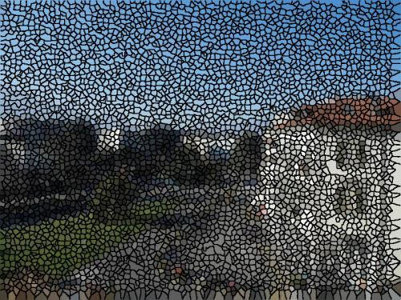
Implementing Pixel Coordinate Distance Calculations
As mentioned earlier, this article and the accompanying sample source code support coordinate distance calculations through three different calculation methods, namely Euclidean, Manhattan and Chebyshev. The method of distance calculation implemented depends on the configuration option specified by the user.
The CalculateDistanceEuclidean method calculates distance implementing the Euclidean Distance Calculation method. In order to aid faster execution this method will calculate the square root of a specific value only once. Once a square root has been calculated the result is kept in memory. The following code snippet lists the definition of the CalculateDistanceEuclidean method:
private static Dictionary <int,int> squareRoots = new Dictionary<int,int>();
private static int CalculateDistanceEuclidean(int x1, int x2, int y1, int y2)
{
int square = (x1 - x2) * (x1 - x2) + (y1 - y2) * (y1 - y2);
if(squareRoots.ContainsKey(square) == false)
{
squareRoots.Add(square, (int)Math.Sqrt(square));
}
return squareRoots[square];
}
private static Dictionary <int,int> squareRoots = new Dictionary<int,int>(); private static int CalculateDistanceEuclidean(int x1, int x2, int y1, int y2) { int square = (x1 - x2) * (x1 - x2) + (y1 - y2) * (y1 - y2); if(squareRoots.ContainsKey(square) == false) { squareRoots.Add(square, (int)Math.Sqrt(square)); } return squareRoots[square]; }
The two other methods of calculating distance are implemented through the CalculateDistanceManhattan and CalculateDistanceChebyshev methods. The definition as follows:
private static int CalculateDistanceManhattan(int x1, int x2, int y1, int y2)
{
return Math.Abs(x1 - x2) + Math.Abs(y1 - y2);
}
private static int CalculateDistanceChebyshev(int x1, int x2, int y1, int y2)
{
return Math.Max(Math.Abs(x1 - x2), Math.Abs(y1 - y2));
}
private static int CalculateDistanceManhattan(int x1, int x2, int y1, int y2) { return Math.Abs(x1 - x2) + Math.Abs(y1 - y2); } private static int CalculateDistanceChebyshev(int x1, int x2, int y1, int y2) { return Math.Max(Math.Abs(x1 - x2), Math.Abs(y1 - y2)); }
Bad Ragaz: Block Size 12, Factor 1, Chebyshev
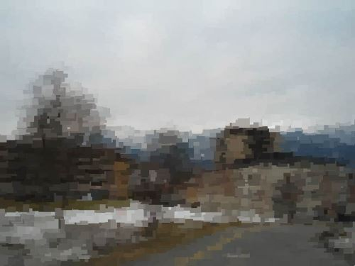
Implementing Gradient Based Edge Detection
Did you notice the very last step performed by the StainedGlassColorFilter method involves implementing Gradient Based Edge Detection, depending on whether edge detection had been specified by the user.
The following code snippet provides the implementation of the GradientBasedEdgeDetectionFilter extension method:
public static Bitmap GradientBasedEdgeDetectionFilter(
this Bitmap sourceBitmap,
Color edgeColour,
byte threshold = 0)
{
BitmapData sourceData =
sourceBitmap.LockBits(new Rectangle (0, 0,
sourceBitmap.Width, sourceBitmap.Height),
ImageLockMode.ReadOnly,
PixelFormat.Format32bppArgb);
byte[] pixelBuffer = new byte[sourceData.Stride * sourceData.Height];
byte[] resultBuffer = new byte[sourceData.Stride * sourceData.Height];
Marshal.Copy(sourceData.Scan0, pixelBuffer, 0, pixelBuffer.Length);
Marshal.Copy(sourceData.Scan0, resultBuffer, 0, resultBuffer.Length);
sourceBitmap.UnlockBits(sourceData);
int sourceOffset = 0, gradientValue = 0;
bool exceedsThreshold = false;
for(int offsetY = 1; offsetY < sourceBitmap.Height - 1; offsetY++)
{
for(int offsetX = 1; offsetX < sourceBitmap.Width - 1; offsetX++)
{
sourceOffset = offsetY * sourceData.Stride + offsetX * 4;
gradientValue = 0;
exceedsThreshold = true;
// Horizontal Gradient
CheckThreshold(pixelBuffer,
sourceOffset - 4,
sourceOffset + 4,
ref gradientValue, threshold, 2);
// Vertical Gradient
exceedsThreshold =
CheckThreshold(pixelBuffer,
sourceOffset - sourceData.Stride,
sourceOffset + sourceData.Stride,
ref gradientValue, threshold, 2);
if (exceedsThreshold == false)
{
gradientValue = 0;
// Horizontal Gradient
exceedsThreshold =
CheckThreshold(pixelBuffer,
sourceOffset - 4,
sourceOffset + 4,
ref gradientValue, threshold);
if (exceedsThreshold == false)
{
gradientValue = 0;
// Vertical Gradient
exceedsThreshold =
CheckThreshold(pixelBuffer,
sourceOffset - sourceData.Stride,
sourceOffset + sourceData.Stride,
ref gradientValue, threshold);
if (exceedsThreshold == false)
{
gradientValue = 0;
// Diagonal Gradient : NW-SE
CheckThreshold(pixelBuffer,
sourceOffset - 4 - sourceData.Stride,
sourceOffset + 4 + sourceData.Stride,
ref gradientValue, threshold, 2);
// Diagonal Gradient : NE-SW
exceedsThreshold =
CheckThreshold(pixelBuffer,
sourceOffset - sourceData.Stride + 4,
sourceOffset - 4 + sourceData.Stride,
ref gradientValue, threshold, 2);
if (exceedsThreshold == false)
{
gradientValue = 0;
// Diagonal Gradient : NW-SE
exceedsThreshold =
CheckThreshold(pixelBuffer,
sourceOffset - 4 - sourceData.Stride,
sourceOffset + 4 + sourceData.Stride,
ref gradientValue, threshold);
if (exceedsThreshold == false)
{
gradientValue = 0;
// Diagonal Gradient : NE-SW
exceedsThreshold =
CheckThreshold(pixelBuffer,
sourceOffset - sourceData.Stride + 4,
sourceOffset + sourceData.Stride - 4,
ref gradientValue, threshold);
}
}
}
}
}
if (exceedsThreshold == true)
{
resultBuffer[sourceOffset] = edgeColour.B;
resultBuffer[sourceOffset + 1] = edgeColour.G;
resultBuffer[sourceOffset + 2] = edgeColour.R;
}
resultBuffer[sourceOffset + 3] = 255;
}
}
Bitmap resultBitmap = new Bitmap (sourceBitmap.Width, sourceBitmap.Height);
BitmapData resultData = resultBitmap.LockBits(new Rectangle (0, 0,
resultBitmap.Width, resultBitmap.Height),
ImageLockMode .WriteOnly, PixelFormat.Format32bppArgb);
Marshal.Copy(resultBuffer, 0, resultData.Scan0, resultBuffer.Length);
resultBitmap.UnlockBits(resultData);
return resultBitmap;
}
public static Bitmap GradientBasedEdgeDetectionFilter( this Bitmap sourceBitmap, Color edgeColour, byte threshold = 0) { BitmapData sourceData = sourceBitmap.LockBits(new Rectangle (0, 0, sourceBitmap.Width, sourceBitmap.Height), ImageLockMode.ReadOnly, PixelFormat.Format32bppArgb); byte[] pixelBuffer = new byte[sourceData.Stride * sourceData.Height]; byte[] resultBuffer = new byte[sourceData.Stride * sourceData.Height]; Marshal.Copy(sourceData.Scan0, pixelBuffer, 0, pixelBuffer.Length); Marshal.Copy(sourceData.Scan0, resultBuffer, 0, resultBuffer.Length); sourceBitmap.UnlockBits(sourceData); int sourceOffset = 0, gradientValue = 0; bool exceedsThreshold = false; for(int offsetY = 1; offsetY < sourceBitmap.Height - 1; offsetY++) { for(int offsetX = 1; offsetX < sourceBitmap.Width - 1; offsetX++) { sourceOffset = offsetY * sourceData.Stride + offsetX * 4; gradientValue = 0; exceedsThreshold = true; // Horizontal Gradient CheckThreshold(pixelBuffer, sourceOffset - 4, sourceOffset + 4, ref gradientValue, threshold, 2); // Vertical Gradient exceedsThreshold = CheckThreshold(pixelBuffer, sourceOffset - sourceData.Stride, sourceOffset + sourceData.Stride, ref gradientValue, threshold, 2); if (exceedsThreshold == false) { gradientValue = 0; // Horizontal Gradient exceedsThreshold = CheckThreshold(pixelBuffer, sourceOffset - 4, sourceOffset + 4, ref gradientValue, threshold); if (exceedsThreshold == false) { gradientValue = 0; // Vertical Gradient exceedsThreshold = CheckThreshold(pixelBuffer, sourceOffset - sourceData.Stride, sourceOffset + sourceData.Stride, ref gradientValue, threshold); if (exceedsThreshold == false) { gradientValue = 0; // Diagonal Gradient : NW-SE CheckThreshold(pixelBuffer, sourceOffset - 4 - sourceData.Stride, sourceOffset + 4 + sourceData.Stride, ref gradientValue, threshold, 2); // Diagonal Gradient : NE-SW exceedsThreshold = CheckThreshold(pixelBuffer, sourceOffset - sourceData.Stride + 4, sourceOffset - 4 + sourceData.Stride, ref gradientValue, threshold, 2); if (exceedsThreshold == false) { gradientValue = 0; // Diagonal Gradient : NW-SE exceedsThreshold = CheckThreshold(pixelBuffer, sourceOffset - 4 - sourceData.Stride, sourceOffset + 4 + sourceData.Stride, ref gradientValue, threshold); if (exceedsThreshold == false) { gradientValue = 0; // Diagonal Gradient : NE-SW exceedsThreshold = CheckThreshold(pixelBuffer, sourceOffset - sourceData.Stride + 4, sourceOffset + sourceData.Stride - 4, ref gradientValue, threshold); } } } } } if (exceedsThreshold == true) { resultBuffer[sourceOffset] = edgeColour.B; resultBuffer[sourceOffset + 1] = edgeColour.G; resultBuffer[sourceOffset + 2] = edgeColour.R; } resultBuffer[sourceOffset + 3] = 255; } } Bitmap resultBitmap = new Bitmap (sourceBitmap.Width, sourceBitmap.Height); BitmapData resultData = resultBitmap.LockBits(new Rectangle (0, 0, resultBitmap.Width, resultBitmap.Height), ImageLockMode .WriteOnly, PixelFormat.Format32bppArgb); Marshal.Copy(resultBuffer, 0, resultData.Scan0, resultBuffer.Length); resultBitmap.UnlockBits(resultData); return resultBitmap; }
Zurich: Block Size 15, Factor 1, Manhattan, Edge Threshold 1
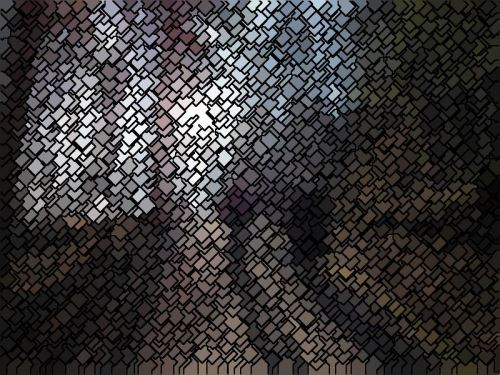
Sample Images
This article features a rendered graphic illustrating an example Voronoi Diagram which has been released into the public domain by its author, Augochy at the wikipedia project. This applies worldwide. The original can be downloaded from Wikipedia.
{kind=link}
All of the photos that appear in this article were taken by myself. Photos listed under Zurich, Locarno and Bad Ragaz were shot in Switzerland. The photo listed as Salzburg had been shot in Austria and the photo listed under Port Edward had been shot in South Africa. In order to fully realize the extent to which images had been modified the following section details the original photos.
Zurich, Switzerland
Salzburg, Austria
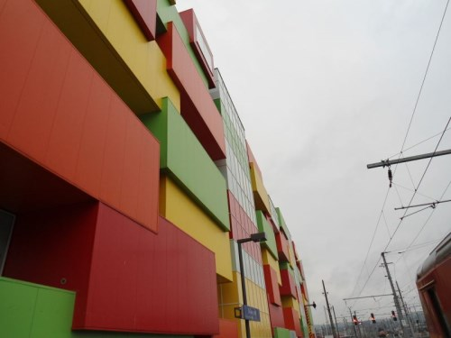
Locarno, Switzerland
Bad Ragaz, Switzerland
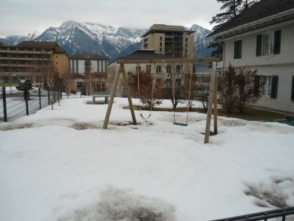
Port Edward, South Africa
Zurich, Switzerland
Zurich, Switzerland
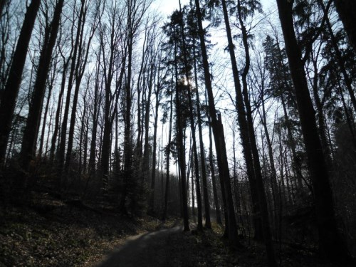
Zurich, Switzerland
Bad Ragaz, Switzerland
Source Code Files
- ExtBitmap.cs - Contains the Class definition of the Pixel class and VoronoiPoint class. In addition also contains the following method definitions: CalculateDistanceEuclidean, CalculateDistanceManhattan, CalculateDistanceChebyshev, GradientBasedEdgeDetectionFilter, StainedGlassColorFilter.
- MainForm.cs - Windows Forms based sample application definition.
More Information
This article is based on an article originally posted on my blog: http://softwarebydefault.com/2013/06/30/stained-glass-image-filter/ If you have any questions/comments please feel free to make use of the Q&A section on this page, also please remember to rate this article.